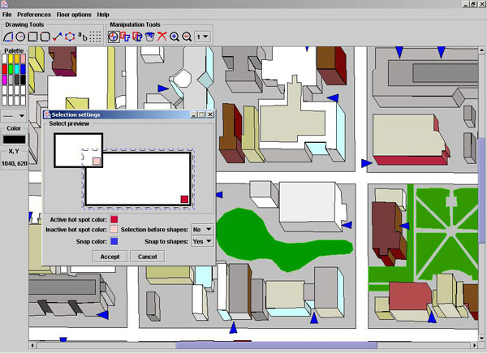
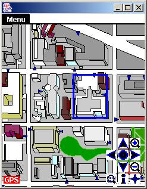

Tour Guide and Map Building Programs:
This is a design document showing how to build a tour guide program. The program displays a map of an area of interest along with the users current position on the map. The program provides information regarding any location or building depicted by the map. It also provides building search by name and address. This program uses maps and floor plans produced by a map building application. The map builder uses geometric shapes, colors and text to represent a map of a particular relief or a floor plan of a building. The application also provides tools to manipulate the geometric shapes as the user desires. Finally, a map produced by the map builder is translated and stored for the tour guide to use. The tour guide runs on a Personal Digital Assistant (PDA) using Windows Operating with a processor of at least 150 MHz and at least 8 MB of memory. It requires at most 8 MB of storage. A stylus is used to interact with the application by tapping on the PDAs display, which allows output to be viewed. The map builder is designed to run on a Personal Computer with a processor of at least 300 MHz and at least 32 MB of main memory. It requires at most 3 MB of disk storage. A keyboard and mouse are the main input devices. Output is viewed on a color monitor.

